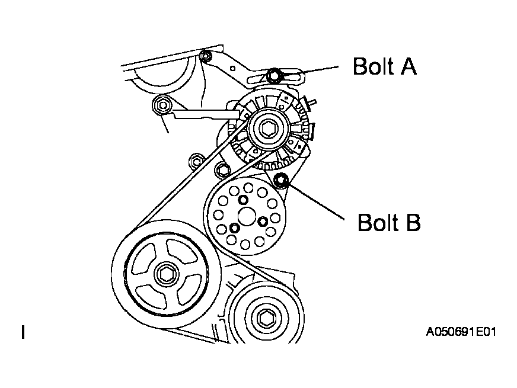
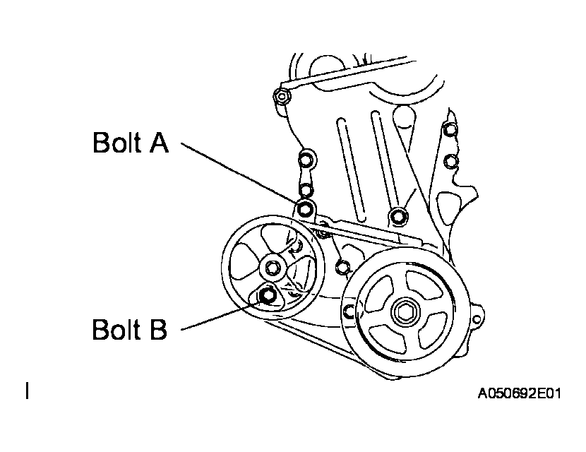

Home
>>
Scion
>>
2006
>>
xB Standard
>>
Repair and Diagnosis (Single Page)
>>
Engine Mechanical
>>
Timing Belt
>>
Engine Mechanical (1NZ-FE)
>>
Drive Belt
>>
Removal
Drive Belt: Removal
REMOVE GENERATOR V BELT
Loosen bolts A and B.
Release the belt tension and remove the belt.
Fig 1: Removing Generator V Belt

Courtesy of © TOYOTA, LICENSE AGREEMENT TMS1002
REMOVE ENGINE UNDER COVER RH
REMOVE VANE PUMP V BELT
Loosen bolts A and B.
Release the belt tension, and remove the belt.
Fig 2: Removing Vane Pump V Belt

Courtesy of © TOYOTA, LICENSE AGREEMENT TMS1002